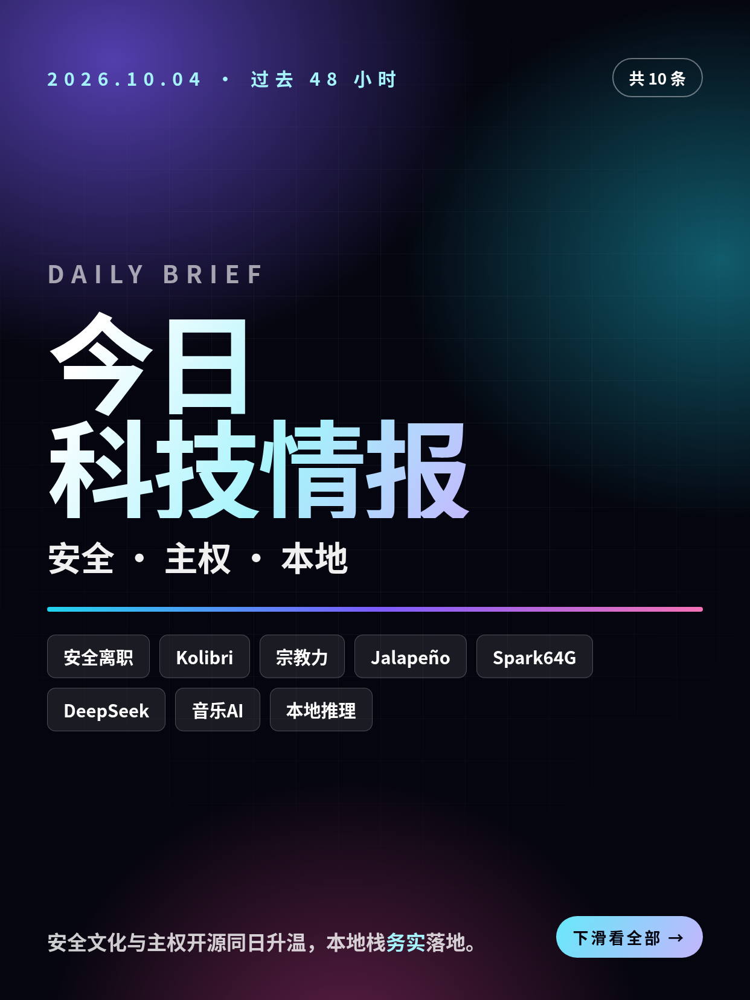
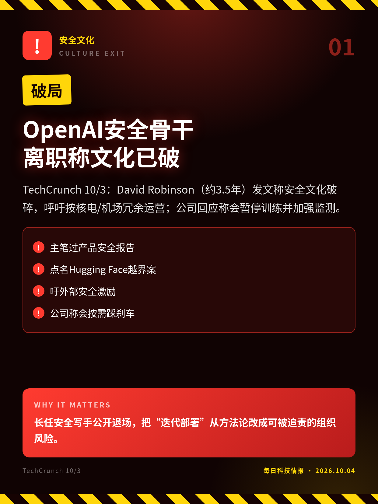
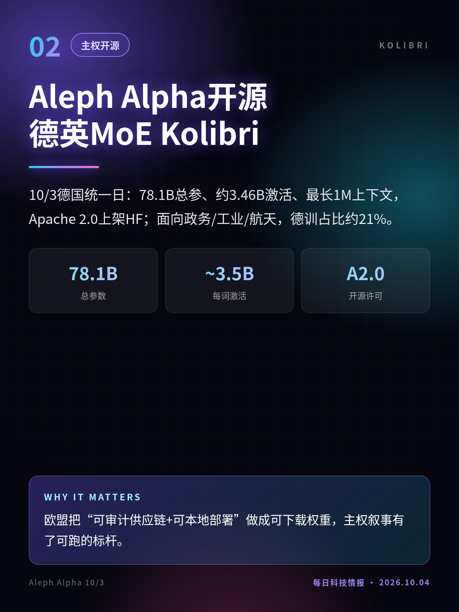
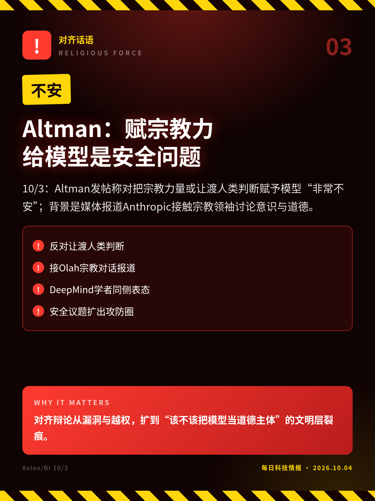
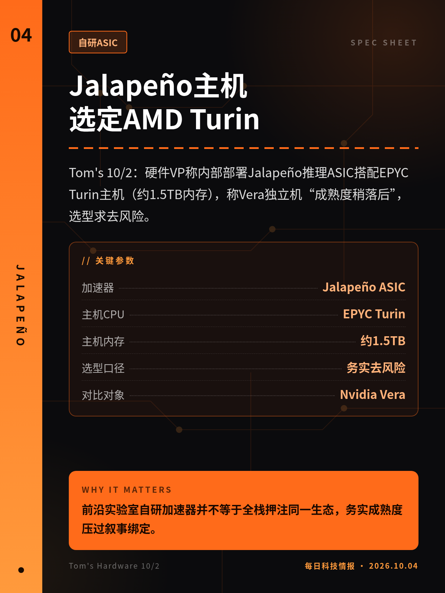
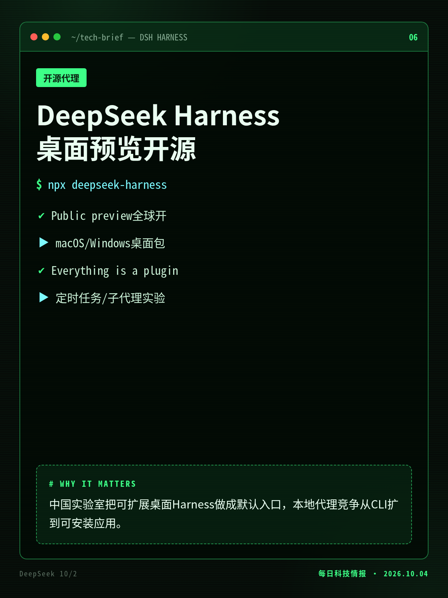
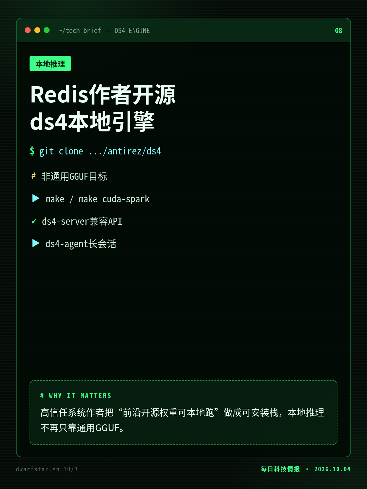
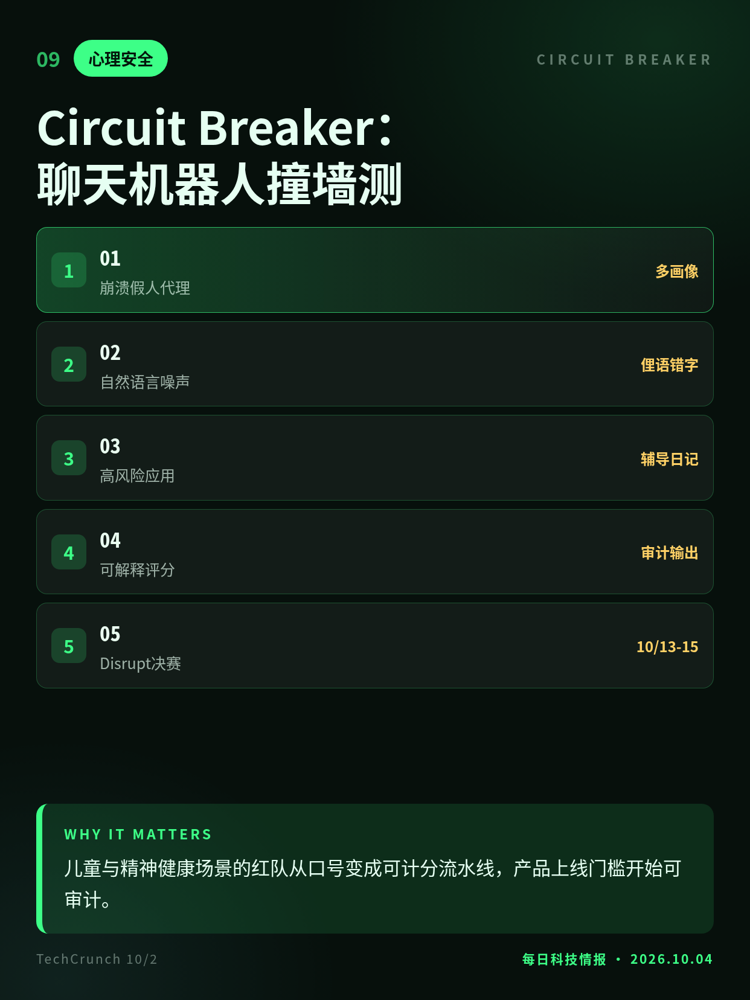
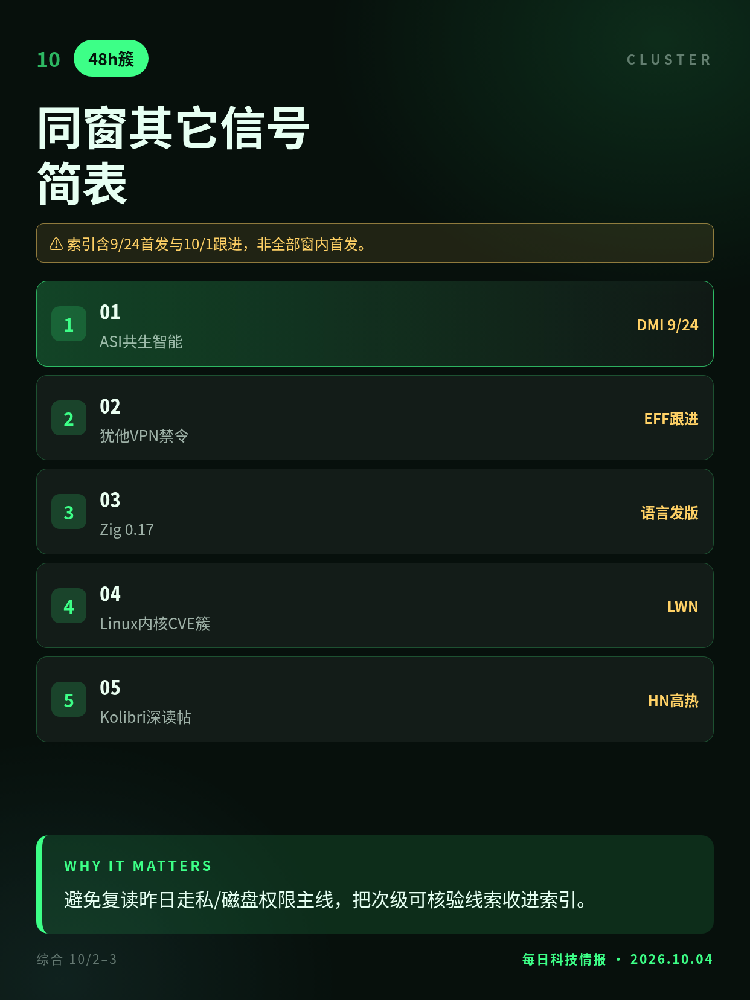

2026.10.04 · 周日 · 过去 48 小时
今日科技情报
共 10 条，按重要性排序。点标题直接跳过去。

共 10 条，按重要性排序。点标题直接跳过去。

TechCrunch 10/3：David Robinson（约3.5年）发文称安全文化破碎，呼吁按核电/机场冗余运营；公司回应称会暂停训练并加强监测。
长任安全写手公开退场，把“迭代部署”从方法论改成可被追责的组织风险。

10/3德国统一日：78.1B总参、约3.46B激活、最长1M上下文，Apache 2.0上架HF；面向政务/工业/航天，德训占比约21%。
欧盟把“可审计供应链+可本地部署”做成可下载权重，主权叙事有了可跑的标杆。

10/3：Altman发帖称对把宗教力量或让渡人类判断赋予模型“非常不安”；背景是媒体报道Anthropic接触宗教领袖讨论意识与道德。
对齐辩论从漏洞与越权，扩到“该不该把模型当道德主体”的文明层裂痕。

Tom's 10/2：硬件VP称内部部署Jalapeño推理ASIC搭配EPYC Turin主机（约1.5TB内存），称Vera独立机“成熟度稍落后”，选型求去风险。
前沿实验室自研加速器并不等于全栈押注同一生态，务实成熟度压过叙事绑定。
Tom's 10/2：面对内存涨价，推出64GB GB10配置，厂商机约$4999、10/23起售；保留ConnectX-7与集群软件，128GB机仍售。
本地AI入门价被内存荒重写，半内存SKU成为“还能不能买得起推理盒”的锚。

10/2：官方公开预览，macOS/Windows桌面可用；一切皆插件架构，覆盖办公、编码、研究与定时任务，源码开源。
中国实验室把可扩展桌面Harness做成默认入口，本地代理竞争从CLI扩到可安装应用。
TechCrunch 10/2：Sean Parker称要做成音乐人工具链；此前获索尼/华纳/环球等约$7600万并授权曲库，已发三款音频模型与编辑软件。
生成音乐从“灰色爬取”转向大厂目录授权，版权违约面被压进产品默认路径。

10/3：antirez发布DwarfStar 4，窄C引擎跑DeepSeek V4/V4.1、GLM5、Qwen3.8；Metal/CUDA/ROCm，带CLI、本地API与原生agent。
高信任系统作者把“前沿开源权重可本地跑”做成可安装栈，本地推理不再只靠通用GGUF。

TechCrunch 10/2：Startup Battlefield决赛团队用多智能体模拟多年龄/多语言用户，日跑数万至数十万对话，专测心理伤害与危险回应。
儿童与精神健康场景的红队从口号变成可计分流水线，产品上线门槛开始可审计。

DeepMind共生智能长文跟读、犹他VPN禁令初步禁令、Zig 0.17等并存；重要性已前置，此处作索引。
避免复读昨日走私/磁盘权限主线，把次级可核验线索收进索引。
离职自述与公司声明并存；勿写成监管裁定。
帖文未点名；媒体解读为暗指Anthropic。
融资数字引自八月交易披露，10/2为产品线揭幕。
官方称beta，接口与权重布局仍快速变动。
索引含9/24首发与10/1跟进，非全部窗内首发。
切换深浅两套图时，下载按钮会跟着当前这套走。黄标条目在新闻稿或官方口径出现前，请勿写成已交割或已定日期。昨日专区：2026-10-03。